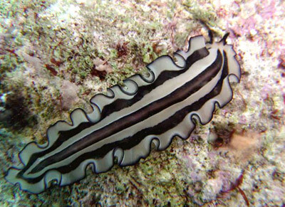

Плоские черви
Плоские черви являются членами типа Platyhelminthes. Существует более 20 000 известных видов плоских червей. Их можно найти в пресноводной, морской или влажной земной среде.
Большинство видов плоских червей являются свободноживущими, однако, некоторые из них — паразиты.
Паразиты живут в теле хозяина и могут наносить ему вред. Плоские черви имеют двухсторонние симметричные плоские тела. Они имеют форму, напоминающую ленту.
Существует четыре основных класса плоских червей, таких как Cestoda (ленточные черви), Turbellaria (ресничные черви), Trematoda (сосальщики) и Monogenea (моногенетические сосальщики).
Класс Turbellaria состоит в основном из свободноживущих видов. Cestoda, Monogenea и Trematoda паразитические виды.
Семейство планарии обитает в пресной воде. Это гермафродиты (имеют мужские и женские половые органы).
У них простой мозг (ганглии) и нервная система, стреловидная голова и два глазных пятна. Они обладают способностью к регенерации.

Вернуться назад